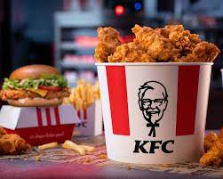

KFC, short for Kentucky Fried Chicken, is one of the most iconic fast-food chains globally, renowned for its signature fried chicken. The brand was founded by Colonel Harland Sanders in 1952 in Corbin, Kentucky. Sanders developed a unique recipe featuring a secret blend of '11 herbs and spices TM' that quickly gained popularity and became a household name. Over the years, KFC has expanded into a global phenomenon, with thousands of locations in more than 150 countries, making it one of the most recognized and beloved brands worldwide. KFC is particularly famous for its crispy fried chicken, which is served in various forms, including buckets, sandwiches, wraps, and more. The brand has always maintained its commitment to quality, using fresh ingredients and ensuring that each piece of chicken is cooked to perfection. This dedication to excellence has earned KFC a loyal customer base that spans generations. In addition to its classic offerings, KFC has continuously innovated its menu to cater to the evolving tastes and preferences of its customers. From introducing new flavors like the spicy Zinger burger to offering healthier options and vegetarian meals in select regions, KFC strives to meet the diverse needs of its global audience. Despite these innovations, the brand remains true to its roots, with the original recipe chicken still being a best-seller. Beyond its culinary achievements, KFC is also committed to making a positive impact on the communities it serves. The company is actively involved in various sustainability initiatives, focusing on reducing its environmental footprint and promoting responsible sourcing practices. KFC also engages in charitable efforts, supporting local communities through donations, volunteer work, and partnerships with various organizations. KFC's marketing and brand identity have played a significant role in its success. The image of Colonel Sanders, with his distinctive white suit and goatee, has become synonymous with the brand, symbolizing its commitment to quality, tradition, and hospitality. The company has also embraced modern marketing trends, utilizing social media and digital platforms to engage with a new generation of customers, ensuring that the KFC legacy continues to thrive. In conclusion, KFC's rich history, commitment to quality, and dedication to innovation have solidified its place as a leader in the fast-food industry. Whether you're enjoying a bucket of fried chicken with family and friends or trying one of the brand's new offerings, KFC remains a beloved choice for millions of people around the world. The brand's ongoing efforts to adapt to changing consumer preferences while staying true to its core values ensure that KFC will continue to be a favorite for generations to come.
| Menu Item | Price | Description | |
|---|---|---|---|
| small | Large | ||
| Fried chicken | $5.99 | $8.99 | Our classic recipe frid chicken, made with 11 herbs and spices, cripy on the on the out size, tender onn the in size |
| Chicken sandwich | $4.99 | $7.99 | |
| Chicken Tenders | $4.99 | $6.99 | |
| Mashed potatoes with Gravey | $2.99 | $3.99 | Creamy, flavorful sides that perfectly complement our chicken dishes. |
| Colesalaw | $1.99 | $3.49 | |
| Biscuits | $0.99 | $1.99 | |
At, KFC wepritize our customers satisfaction . our dedicated team is here to ensure that your experience with us exoectional, whether you'e dinning in, ordering online ,or reaching out with feedback. we value our your opinion and strive to improve our service continuesly.